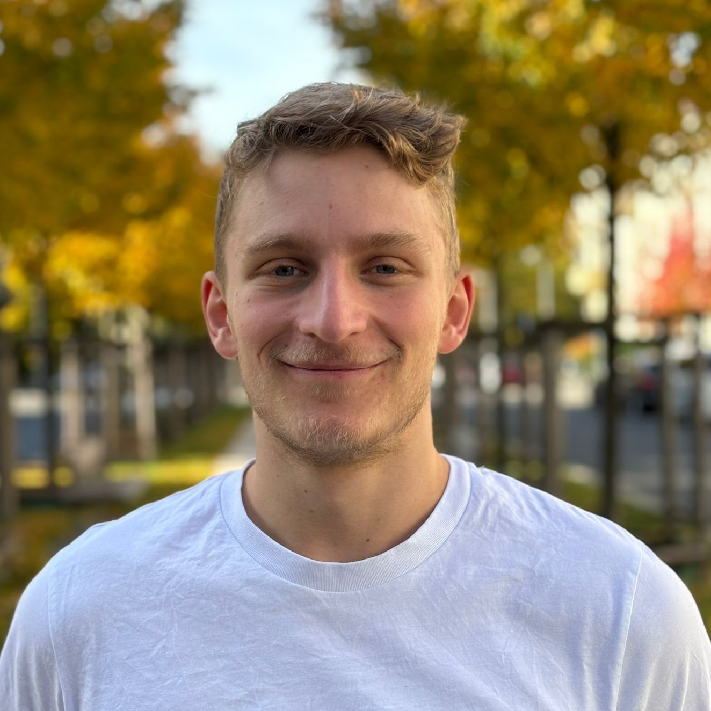

PhD Researcher at HEIBRiDS Berlin working at
Max-Delbrück-Centrum für Molekulare Medizin (MDC) and
Freie Universität Berlin (FU)
My research focuses on understanding the molecular architecture of cells by integrating high-resolution imaging, artificial intelligence, and computational modeling. Using cryo-electron tomography (CryoET), I investigate the native organization of biomolecules within cells and develop AI-driven methods to identify and annotate them within tomograms. To interpret this data, I combine CryoET with complementary structural and biophysical information and employ molecular simulations to capture the dynamic conformations and interactions of proteins. Ultimately, my goal is to develop automated, AI-assisted approaches to map molecular complexes in cells, providing insights into cellular organization, molecular networks, and help other researchers with my tools.
→ Full CV (PDF) updated Oct 2026
Hannes Drobek
AG Kudryashev
Max-Delbrück-Centrum für Molekulare Medizin (MDC)
Robert-Rössle-Str. 10
13092 Berlin
AG Clementi
Freie Universität Berlin (FU)
Arnimallee 12
14195 Berlin